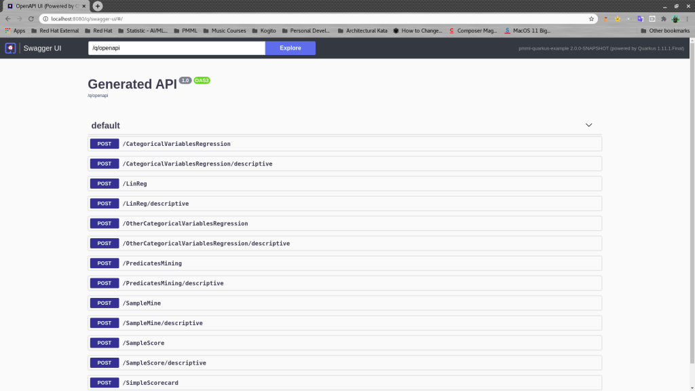
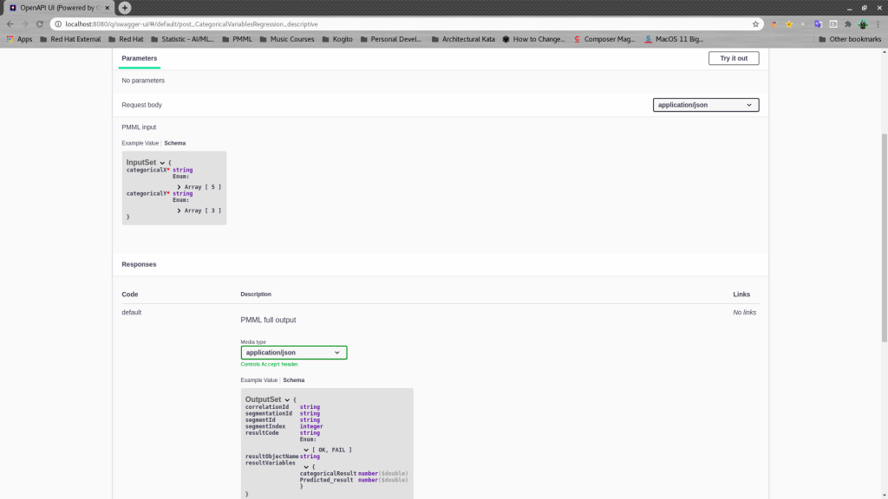

Predictions in Kogito: PMML endpoints with OpenAPI
Introduction
PMML is an XML standard whose scope is to define different kinds of predictive models (Regression, Scorecard, Tree, Neural Network, etc) in a system-agnostic way, so that it may be used and shared by different systems/implementations.
The OpenAPI Specification (OAS) defines a standard, language-agnostic interface to RESTful APIs which allows both humans and computers to discover and understand the capabilities of the service without access to source code, documentation, or through network traffic inspection.
Beginning in January 2020 a new initiative, PMML-Trusty, has started to provide a fast, reliable implementation natively available inside Drools and Kogito.
Recently, a new feature has been added to implement OpenAPI usage in PMML-specific rest-endpoints created by the Kogito framework, for both Quarkus and Springboot environments.
Predictions in Kogito
The PMML-Trusty engine is exposed in Kogito through rest endpoints. This allows an extremely easy way to create a PMML executor that, at the same time, is available through easy-to-use, standard, language agnostic rest endpoints.
A bare-minimum Kogito project requires some PMML files in the resources folder and a configuration yaml. Here are Quarkus and Springboot example projects.
During Kogito code generation, engine-specific classes are created out of the models found in the given PMML files.
Then, for each model a Rest class is created, whose root path is derived from the model name. Inside this class there are two specific endpoints:
- result (“{root_path}/”)
- descriptive (“{root_path}/descriptive”)
The first endpoint will return only the raw result of model evaluation, while the second one will return a complex object containing additional information and metadata.
OpenAPI Rest endpoints
The generated endpoints are further enriched with OpenAPI metadata.
For each model a json-schema file is created, containing the descriptive representation of:
- requested input (InputSet)
- (raw) result output (ResultSet)
- descriptive output (OutputSet)
Here’s the overall skeleton of a generated json schema:
{
"definitions": {
"OutputSet": {
"type": "object",
"properties": {
...
}
},
"InputSet": {
"type": "object",
...
}
},
"ResultSet": {
"type": "object",
"properties": {
...
}
}
}
}
An extremely useful feature is the ability to propagate the model requirements/constraints to the final consumer, for example, the valid values for a string field or the allowed ranges for numeric values. The following snippet shows a couple of example about that
"resultCode": {
"type": "string",
"enum": [
"OK",
"FAIL"
]
}
"temperature": {
"type": "number",
"format": "double",
"intervals": [
"-∞ -10",
"-10 10",
"10 ∞"
]
}
When rendered inside the html page, such metadata will be shown, providing help on endpoint usage to the final end user.
A couple of images will give an idea on how the pages would look like for PMML endpoints:


Conclusion
OpenAPI-enriched Rest-endpoints provides a useful feature to help end users in the rest-endpoint usage and, at the same time, to write more robust program-driven consumers.
Exposing input and output schemas in json format allows the developer to write code that
- retrieves the required fields and formats
- submit data for evaluation
- analyze or manage returned values in the light of the expected output